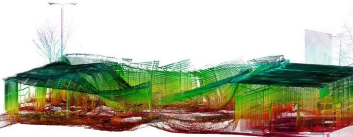
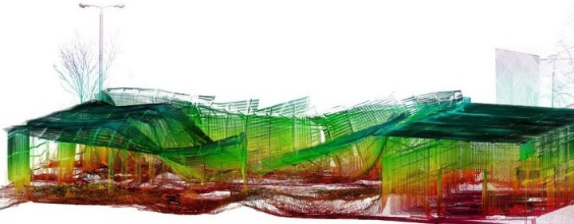

Stairway to heaven
Skaning laserowy możemy podzielić na:
Naziemny skaning laserowy (z ang. TLS – Terrestrial Laser Scanning)
- w skrócie reprezentowany jest przez naziemne skanery 3d, które za pomocą lasera są w stanie pozyskać miliony punktów 3d poprzez rejestracji ich współrzędnych XYZ oraz parametry intensywności odbicia. Tak pozyskane dane mogą zostać zaimportowane do aplikacji typu CAD lub 3D i być dowolnie przetwarzane jako chmura punktów.Lotniczy skaning laserowy (z ang. ALS – Airborne Laser Scanning)
Mobilny skaning laserowy (z ang. MLS – MobileAirborne Laser Scanning)
- w skrócie jest metodą pozyskiwania informacji 3D przy pomocy skanera zintegrowanego na poruszających się platformach takich jak łodzie, pociągi oraz samochody. Ta metoda również nazywana jest jako kinematyczny skaning laserowy.Satelitarny skaning laserowy (ang. SLS)
- skaning laserowy przeprowad zony z pułapu orbity okołoziemskiej. Do tej pory jedynym instrumentem wykorzystującym tą technikę był Geoscience Laser Altimeter System (GLAS) zamontowany na satelicie ICESat. Średnica plamek lasera (ang. beam; footprint) wysyłanego z orbity znajdującej się na wysokości 600 km, na powierzchni Ziemi wynosi około 70 m, a jej środki oddalone są od siebie o około 172 m. Dokładność określenia wysokości tym urządzeniem wynosi ±10 cm (dla niezróżnicowanych obszarów o spadku do 1°) i jest uzależniona od orientacji zewnętrznej samego satelity wykorzystującego sygnały GPS oraz kamer śledzących położenie gwiazd tzw. Stellar Reference System (SRS). Pomimo, iż ICESat konstruowano z myślą o obserwacji obszarów polarnych (lodowców i lodu morskiego), to znane są prace badawcze dotyczące wykorzystania tych danych w wielu innych dziedzinach (np. dla potrzeb inwentaryzacji szaty roślinnej).